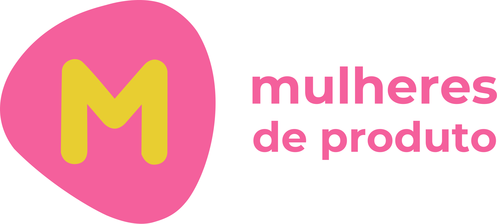

para Empresas?
O MDP Curtas já se consolidou como um dos encontros presenciais de maior impacto para mulheres em tecnologia do Brasil, promovido pela ONG Mulheres de Produto. Agora, nós levamos toda essa expertise, engajamento e curadoria de alto nível para dentro da sua companhia.
Mais do que um treinamento corporativo padrão, o Curtas para Empresas é uma experiência exclusiva e in-house, desenhada para conectar, inspirar e engajar as mulheres do seu time que atuam em Gestão de Produtos, Marketing, Experiência do Cliente e outras áreas de desenvolvimento digital.
Nós transformamos o ambiente da sua empresa em um espaço de troca acolhedor e inspirador, focado em aprendizado prático, networking interno e no fortalecimento estratégico da presença feminina na sua operação.
